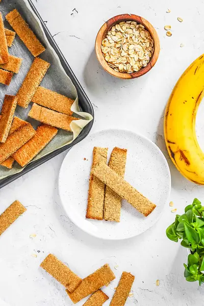

Homemade Baby Teething Biscuits Recipe

Ingredients
- 2 ½ cups rolled oats
- 2 tbsp melted coconut oil
- 1 tsp vanilla extract
- 2 small ripe bananas (or 1 large ripe banana (should be 6oz total in weight)
Steps
- Preheat the oven to 350 degrees F or 170 degrees C.
- Place the oats into a food processor and blend to form a fine powder.
- Add all other ingredients and blend until a dough has formed.
- Remove mixture from the food processor and roll in between 2 sheets of parchment paper to approx. ¼ inch thick. (Note: it's really important to get it to ¼ inch thick - if the dough has been rolled thicker than 1/4 inch in thickness it will take longer to cook).
- Remove the top layer of paper and cut into 36 evenly sized sticks.
- Place the sheet of cut teething sticks onto a baking sheet and bake for 12 minutes until just cooked through.
- Take the teething sticks out of the oven. Run a knife along the slice marks and separate each teething stick. Bake them again for another 10-15 minutes to make them firm. Make sure to keep an eye on the sticks as they bake, and remove any that are cooking quickly to stop them from burning.
- Remove and cool completely on the baking sheet before transferring them to a cooling rack. This is important to make sure they don't end up being chewy vs. crunchy!
Recipe by Anjali Shah · The Picky Eater, from The Picky Eater. Saved here for personal use; the original has the full notes, tips and photos. Open original